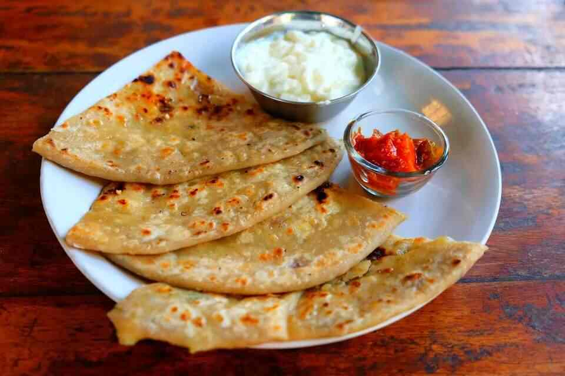
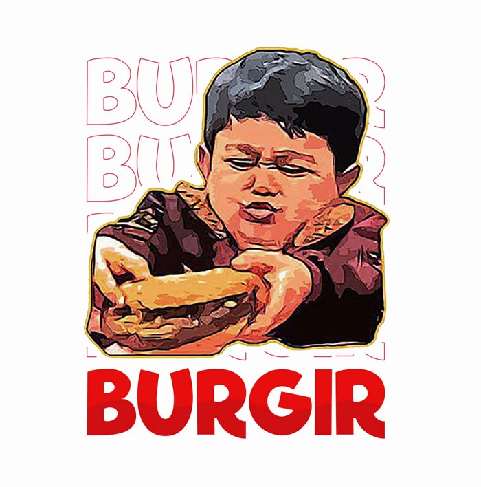
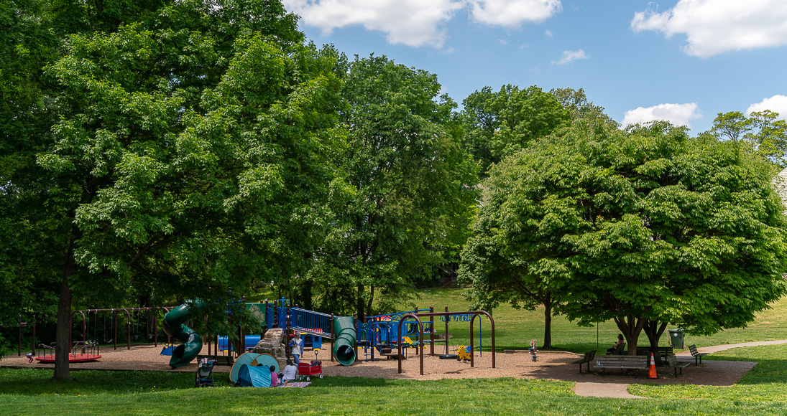

- Aloo
- Paneer
- Gobhi

- Paneer
- Chicken
- Egg

- Veg
- Chicken
- Aloo
This is the first paragraph of my blog post. I'm excited to share my thoughts and experience with you all. In this post, I will be talking about my day.
Let's start with my morning, i woke up early and had a cup of coffee. Then, I decided to go for a walk in the park. It was a beautiful sunny day and the birds were singing. I saw many walking thier dogs and children playing. It was very refreshing.

Here are the images related to my walk in the park(It's a park and a dog!)
Things I saw in the park (List Example):
In this post, I want to talk about my favourite food! I really enjoy trying the different cuisines and exploring new flovers.
Here are some of my top favourite foods:
These are just few of my favourite. what are yours?
That's all for this post! Thanks for reading!
© 2025 My simple Blog. All rights reserved.